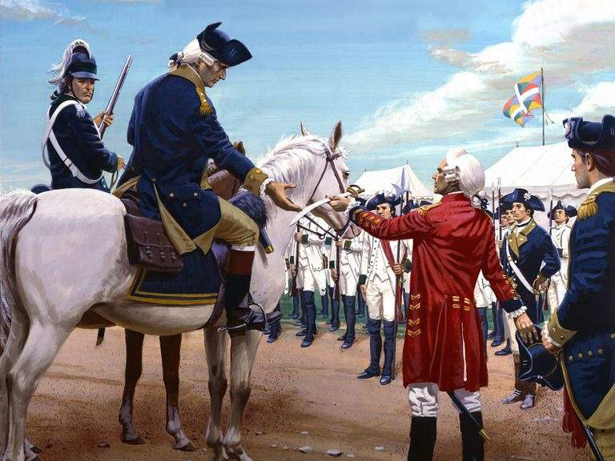
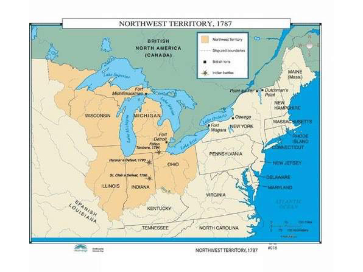

The official end of the American Revolution came with the Treaty of Paris in 1783. The British government recognized the new nation of the United States and ceded territory to the new nation in the West known as the Northwest Territory. This new land would open the door for future westward expansion and shape the nation’s geography and nature. While the United States was recognized as a nation, the nature of politics within led to a fairly weak central government.
|
 |
 |
Many Americans at the time considered themselves to be citizens of their respective states rather than belonging to a new unified nation. This combined with the mistrust of strong centralized government resulted in a new plan for the government called the Articles of Confederation. The Articles put in place a very weak central (or federal) government which had limited ability to raise funds and maintain a regular army. Each state printed its own money, which led to difficulties in commerce within the borders of the United States.
The problems with the new plan of government was punctuated by events such as Shays' Rebellion, which would force many leaders of the time to conclude that the system under the Articles was insufficient. This would force a new Constitutional convention to reorganize the government of the United States.